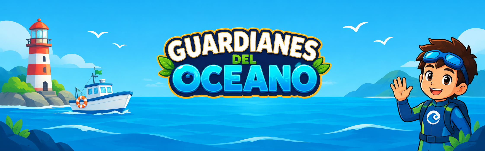
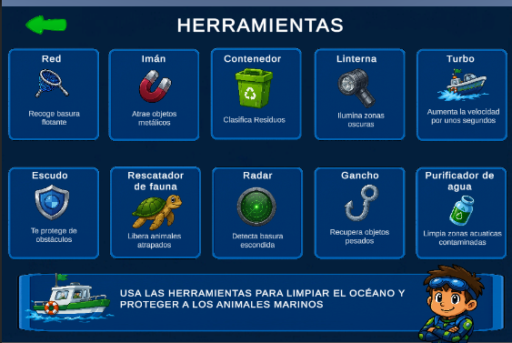

1. Menú Principal
La pantalla de inicio da la bienvenida a los jugadores con un entorno animado en bucle, mostrando elementos de la naturaleza, el faro y las opciones principales para comenzar la aventura.


Guardianes del Océano es un videojuego educativo en 2D desarrollado en Unity que combina la aventura y la ecología. Su misión principal es generar conciencia sobre la contaminación ambiental a través de dinámicas lúdicas donde los jugadores aprenden la importancia de limpiar los recursos naturales.
La pantalla de inicio da la bienvenida a los jugadores con un entorno animado en bucle, mostrando elementos de la naturaleza, el faro y las opciones principales para comenzar la aventura.
Espacio interactivo donde los usuarios eligen el entorno de limpieza:

Zona costera donde el jugador se enfoca en recolectar plásticos y residuos arrastrados a la orilla por las olas.

Entorno marino abierto donde se implementan retos de navegación, recolección de basura flotante y esquive de obstáculos.
El juego incluye un inventario de herramientas ecológicas y de apoyo (redes, imanes, contenedores, escudos y purificadores) diseñadas para facilitar la limpieza del agua.

.ZIP en una carpeta de tu preferencia.GuardianesDelOceano.exe.Configuración del motor Unity 2D, programación de mecánicas iniciales de movimiento y diseño del menú principal.
Implementación de las zonas Playa y Océano. Programación del inventario e interacción de herramientas ecológicas.
Integración de efectos de sonido, diseño de interfaz de usuario, pruebas de juego y corrección de errores.
Efectos de sonido y música de fondo utilizados bajo licencias Creative Commons provenientes de Freesound.org y OpenGameArt.org.
Se utilizaron herramientas de IA exclusivamente como apoyo en la optimización de código en C# e inspiración conceptual para bocetos e ideas iniciales.
El código fuente de este proyecto se distribuye bajo la licencia MIT. Los recursos gráficos y de arte son propiedad exclusiva de los autores del proyecto.
Clasificación sugerida: PEGI 3 / ESRB Everyone (Apto para todo público). No contiene violencia gráfica ni contenido sensible.
Proyecto entregado con fines estrictamente académicos. Se ofrece "tal cual", sin garantías de actualizaciones o mantenimiento técnico posterior.
Si tienes preguntas, dudas o comentarios sobre el proyecto, puedes contactarnos en:
Correo: contacto.guardianes@ejemplo.com
Este sitio web y el videojuego no recopilan, almacenan ni procesan datos personales ni métricas de uso de los usuarios.